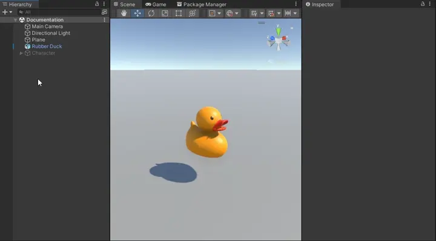
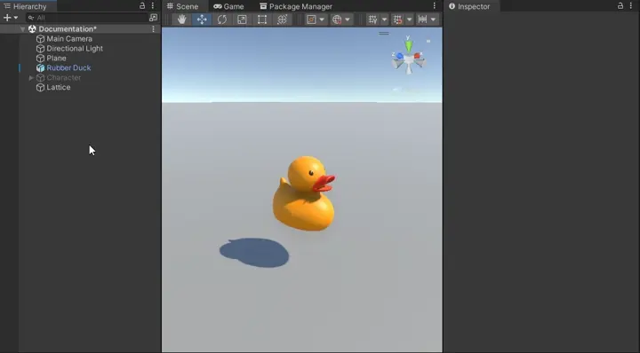
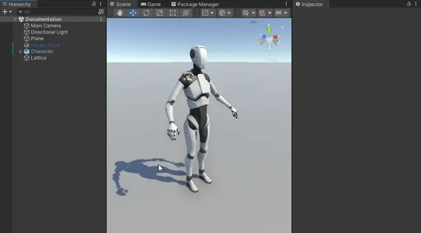
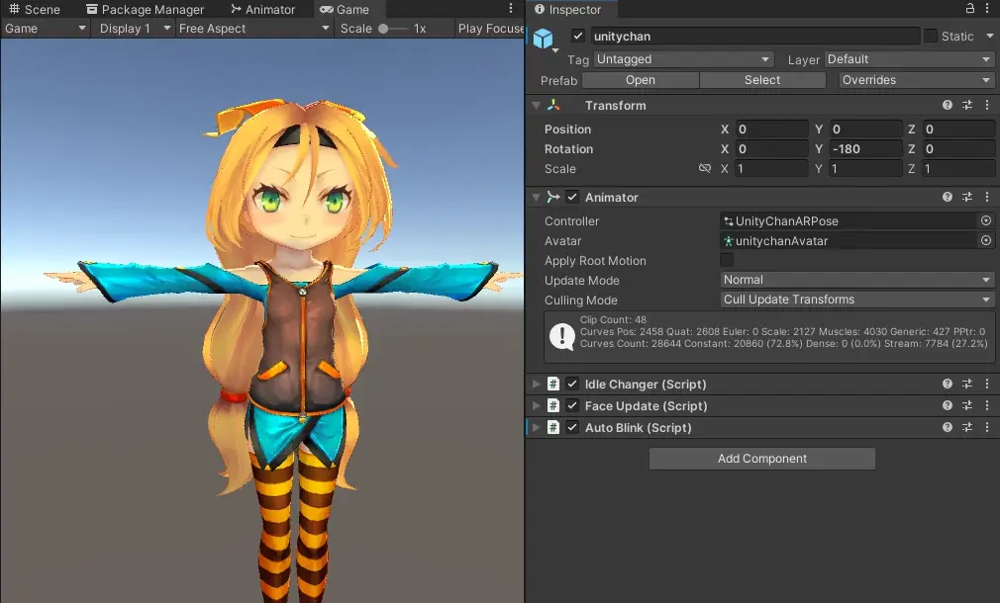

Getting Started
Make sure to check out the included samples for examples and demo animations.
Create a Lattice
To start using Lattice Modifiers, create a new GameObject and add the Lattice component.
In the inspector, you can change the Lattice Resolution to add more handles if needed.
You can edit the Lattice by clicking on handles and moving them with the move, rotate and scale tool. Hold shift to select multiple at a time, and drag click to use a box selection.
For more details on using Lattices take a look at the using Lattices page.
Note
If no handles are selected, the transform tools will move the GameObject itself, not the lattice handles.

Add a Lattice Modifier
Important
Make sure your model has Read/Write enabled in the model import settings, otherwise the modifier cannot be used.
Select your model, the GameObject with a Mesh Filter and Mesh Renderer, and add the Lattice Modifier component.
In the inspector, add the Lattice we previously made. Enable High Quality to improve deformation quality, and Global if you want the lattice to apply outside of its bounds. Take a look at the included Quality sample for an example of each of these properties.
If you now select the Lattice again and move around the handles, you should see the model deforming along with the Lattice.

Add a Skinned Lattice Modifier
Note
If you intend to use Skinned Lattice Modifiers in your project, make sure GPU skinning is enabled in the project settings: Project Settings > Player > Other Settings > GPU Skinning
Warning
Skinned motion vectors are currently not supported. Make sure to disable Additional Settings > Skinned Motion Vectors on the Skinned Mesh Renderer if you’re using motion blur in your project. Take a look at the roadmap for more details.
Important
Make sure your model has Read/Write enabled in the model import settings, otherwise the modifier cannot be used.
Select your model, the GameObject with a Skinned Mesh Renderer, and add the Skinned Lattice Modifier component.
In the inspector, add the Lattice we previously made, either to the the Lattices list (which are applied before skinning), or the Skinned lattices list (which are applied after skinning). Take a look at the included Skinned sample for an example of the Skinned Lattice Modifier.
If you now select the Lattice again and move around the handles, you should the character deforming along with the lattice.

Blend Shapes
If you’re animating blend shapes using an Animator, the blend shapes may not be correctly animated as the Animator will still be “bound” to the undeformed mesh.
You will need to rebind the Animator, this can be done by calling Animator.Rebind() from a script.
A small utility component RebindOnStart has been provided to achieve this. You can add this component next to the Animator, and it will call Animator.Rebind() for you when you start the game.

Tip
It can be hard to determine how Lattices applied before skinning affect your character, especially if their rig has moved from their bind pose (the T-pose or A-pose).
A quick way to get a reference of their pre-skinning position is to create a child GameObject under your Skinned Mesh Renderer, add a Mesh Filter and Mesh Renderer, and copy the target mesh and materials across. This will display your character in their bind pose which you can use as reference.